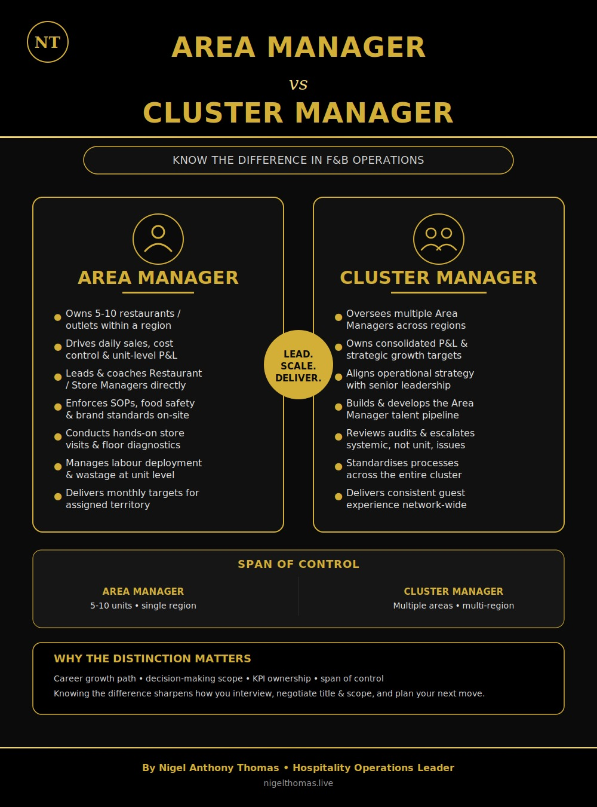

Know the difference in F&B operations — span of control, P&L ownership, and where each role sits on the career ladder.
In multi-unit F&B and hospitality operations, "Area Manager" and "Cluster Manager" are often used loosely — sometimes even interchangeably — but the two roles carry different scope, accountability, and career weight. Understanding the distinction matters whether you're interviewing for one of these roles, negotiating a title, or plotting your next move up the operations ladder.

The Area Manager sits closest to the floor. Typically responsible for 5-10 restaurants or outlets within a single region, this role owns the daily numbers — sales, cost control, and unit-level P&L — and leads Restaurant or Store Managers directly.
The Cluster Manager operates a level above — overseeing multiple Area Managers across regions, owning consolidated P&L, and translating senior leadership strategy into operational standards across the entire cluster.
| Element | Area Manager | Cluster Manager |
|---|---|---|
| Scope | 5-10 units, single region | Multiple areas, multi-region |
| Reports to | Cluster / Operations Manager | Director of Operations / GM |
| Direct reports | Restaurant / Store Managers | Area Managers |
| P&L focus | Unit-level | Consolidated, cluster-level |
| Primary lens | Execution & floor diagnostics | Strategy & standardisation |
Titles get blurred in job postings, but the underlying accountability doesn't. Knowing exactly where a role sits — unit execution vs. multi-region strategy — sharpens how you interview, how you negotiate title and scope, and how you plan the next step in your career.
Both roles are essential to a healthy multi-unit operation — one keeps the floor running, the other keeps the system aligned. If you're building toward Cluster Manager or beyond, mastering the Area Manager lens first is what earns you the seat.